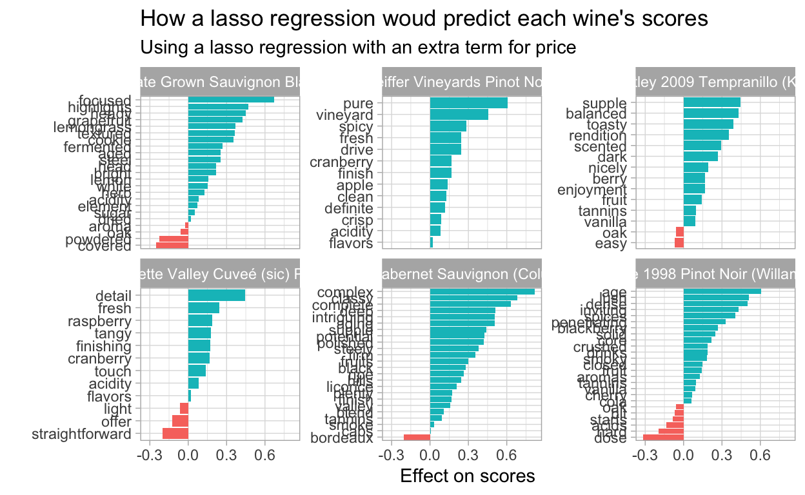

Loading the packages
library(tidyverse)
theme_set(theme_light())Loading the data
tt <- tidytuesdayR::tt_load("2019-05-28")
Downloading file 1 of 1: `winemag-data-130k-v2.csv`
wine_rating <- tt$`winemag-data-130k-v2` %>%
select(-X1)Cleaning Data & EDA
wine_rating <- wine_rating %>%
mutate(year = as.integer(str_extract(title, "20\\d\\d")),
year = ifelse(year < 2000, NA, year)) %>%
filter(!is.na(price))
wine_rating %>%
count(country, sort = TRUE)
# A tibble: 43 x 2
country n
<chr> <int>
1 US 54265
2 France 17776
3 Italy 16914
4 Spain 6573
5 Portugal 4875
6 Chile 4416
7 Argentina 3756
8 Austria 2799
9 Australia 2294
10 Germany 2120
# … with 33 more rows
wine_rating %>%
count(designation, sort = TRUE)
# A tibble: 35,777 x 2
designation n
<chr> <int>
1 <NA> 34779
2 Reserve 1980
3 Estate 1318
4 Reserva 1219
5 Estate Grown 618
6 Riserva 607
7 Brut 472
8 Dry 406
9 Estate Bottled 342
10 Crianza 338
# … with 35,767 more rows
wine_rating %>%
count(country, region_1, sort = TRUE)
# A tibble: 1,247 x 3
country region_1 n
<chr> <chr> <int>
1 Portugal <NA> 4875
2 US Napa Valley 4475
3 Chile <NA> 4416
4 US Columbia Valley (WA) 4109
5 US Russian River Valley 3090
6 Austria <NA> 2799
7 US California 2627
8 US Paso Robles 2327
9 US Willamette Valley 2296
10 Argentina Mendoza 2275
# … with 1,237 more rows
wine_rating %>%
ggplot(aes(year)) +
geom_histogram()
wine_rating %>%
ggplot(aes(points)) +
geom_histogram(binwidth = 1)
wine_rating %>%
ggplot(aes(price)) +
geom_histogram() +
scale_x_log10()The distribution of points and price looks like a normal distribution. Let’s try to predict with linear regression.
wine_rating %>% ggplot(aes(price, points)) +
geom_point() +
geom_smooth(method = "lm") +
scale_x_log10()
summary(lm(points ~ log2(price), data = wine_rating))
Call:
lm(formula = points ~ log2(price), data = wine_rating)
Residuals:
Min 1Q Median 3Q Max
-14.0559 -1.5136 0.1294 1.7133 9.2408
Coefficients:
Estimate Std. Error t value Pr(>|t|)
(Intercept) 78.981419 0.035765 2208 <2e-16 ***
log2(price) 1.974162 0.007338 269 <2e-16 ***
---
Signif. codes: 0 '***' 0.001 '**' 0.01 '*' 0.05 '.' 0.1 ' ' 1
Residual standard error: 2.408 on 120973 degrees of freedom
Multiple R-squared: 0.3744, Adjusted R-squared: 0.3744
F-statistic: 7.239e+04 on 1 and 120973 DF, p-value: < 2.2e-16The coefficient is significant. Every time the price double, the expected points goes up by 2.
What features we can add in the model?
Country
wine_rating %>%
mutate(country = fct_relevel(fct_lump_n(country, 7), "US")) %>%
mutate(country = fct_reorder(country, points)) %>%
ggplot(aes(country, points)) +
geom_boxplot() +
coord_flip()The boxplot suggest that the points varies among countries. Try fitting in the model
wine_rating %>%
mutate(country = fct_relevel(fct_lump_n(country, 7), "US")) %>%
lm(points ~ log2(price) + country, data= .) %>%
summary()
Call:
lm(formula = points ~ log2(price) + country, data = .)
Residuals:
Min 1Q Median 3Q Max
-14.4034 -1.5062 0.1036 1.6716 9.4027
Coefficients:
Estimate Std. Error t value Pr(>|t|)
(Intercept) 78.732031 0.038508 2044.578 < 2e-16 ***
log2(price) 1.990186 0.007514 264.847 < 2e-16 ***
countryArgentina -0.519181 0.040406 -12.849 < 2e-16 ***
countryChile -0.340855 0.037752 -9.029 < 2e-16 ***
countryFrance 0.409573 0.020554 19.926 < 2e-16 ***
countryItaly 0.049183 0.020925 2.350 0.0188 *
countryPortugal 1.122601 0.035903 31.268 < 2e-16 ***
countrySpain -0.179093 0.031307 -5.721 1.06e-08 ***
countryOther 0.963131 0.023808 40.453 < 2e-16 ***
---
Signif. codes: 0 '***' 0.001 '**' 0.01 '*' 0.05 '.' 0.1 ' ' 1
Residual standard error: 2.376 on 120907 degrees of freedom
(59 observations deleted due to missingness)
Multiple R-squared: 0.3911, Adjusted R-squared: 0.3911
F-statistic: 9707 on 8 and 120907 DF, p-value: < 2.2e-16Slightly reduce RSE
Year
Should we use year as a features in the model?
wine_rating %>%
ggplot(aes(year, points, group = year)) +
geom_boxplot()
wine_rating %>%
count(year)
# A tibble: 19 x 2
year n
<int> <int>
1 2000 735
2 2001 668
3 2002 333
4 2003 499
5 2004 1604
6 2005 3293
7 2006 5170
8 2007 6498
9 2008 6725
10 2009 9056
11 2010 11105
12 2011 11437
13 2012 14742
14 2013 15196
15 2014 14892
16 2015 9642
17 2016 3549
18 2017 11
19 NA 5820
wine_rating %>%
mutate(country = fct_relevel(fct_lump_n(country, 7), "US")) %>%
lm(points ~ log2(price) + country + year , data= .) %>%
summary()
Call:
lm(formula = points ~ log2(price) + country + year, data = .)
Residuals:
Min 1Q Median 3Q Max
-14.9967 -1.4889 0.1103 1.6380 9.4787
Coefficients:
Estimate Std. Error t value Pr(>|t|)
(Intercept) -1.714e+02 4.384e+00 -39.104 < 2e-16 ***
log2(price) 2.043e+00 7.694e-03 265.509 < 2e-16 ***
countryArgentina -4.445e-01 4.008e-02 -11.090 < 2e-16 ***
countryChile -2.289e-01 3.777e-02 -6.061 1.36e-09 ***
countryFrance 3.779e-01 2.117e-02 17.848 < 2e-16 ***
countryItaly 1.754e-01 2.126e-02 8.251 < 2e-16 ***
countryPortugal 1.095e+00 3.650e-02 29.989 < 2e-16 ***
countrySpain -8.433e-02 3.219e-02 -2.619 0.00881 **
countryOther 1.005e+00 2.381e-02 42.196 < 2e-16 ***
year 1.243e-01 2.178e-03 57.062 < 2e-16 ***
---
Signif. codes: 0 '***' 0.001 '**' 0.01 '*' 0.05 '.' 0.1 ' ' 1
Residual standard error: 2.339 on 115086 degrees of freedom
(5879 observations deleted due to missingness)
Multiple R-squared: 0.4066, Adjusted R-squared: 0.4065
F-statistic: 8761 on 9 and 115086 DF, p-value: < 2.2e-16The p-value is significant.
Taster
How about taster?
wine_rating %>%
mutate(taster_name = fct_relevel(fct_lump_n(taster_name, 6), "Missing")) %>%
mutate(taster_name = fct_reorder(taster_name, points)) %>%
ggplot(aes(taster_name, points)) +
geom_boxplot() +
coord_flip()Model
Let’s finalise the model
library(broom)
model <- wine_rating %>%
replace_na(list(taster_name = "Missing")) %>%
mutate(country = fct_relevel(fct_lump_n(country, 7), "US"),
taster_name = fct_relevel(fct_lump_n(taster_name, 6), "Missing")) %>%
lm(points ~ log2(price) + country + year + taster_name , data= .)
# coefficient plots
model %>%
tidy(conf.int = TRUE) %>%
filter(term != "(Intercept)") %>%
mutate(term = str_replace(term, "country", "Country: "),
term = str_replace(term, "taster_name", "Taster: "),
term = fct_reorder(term, estimate)) %>%
ggplot(aes(estimate, term, colour = term)) +
geom_point() +
geom_errorbarh(aes(xmin = conf.low, xmax = conf.high)) +
labs(
title = "Coefficient plots",
x = "Estimate",
y = ""
)Coefficient plot suggest all terms are significant
Evaluation model
Have a look on how the fitted point versus the actual points
augment(model) %>%
ggplot(aes(.fitted, points)) +
geom_point(alpha = .1)
tidy(anova(model)) %>%
mutate(sumsq/sum(sumsq))
# A tibble: 5 x 7
term df sumsq meansq statistic p.value `sumsq/sum(sumsq…
<chr> <int> <dbl> <dbl> <dbl> <dbl> <dbl>
1 log2(pri… 1 394060. 3.94e5 74145. 0 0.371
2 country 7 19505. 2.79e3 524. 0 0.0184
3 year 1 17814. 1.78e4 3352. 0 0.0168
4 taster_n… 6 18007. 3.00e3 565. 0 0.0170
5 Residuals 115080 611618. 5.31e0 NA NA 0.576 Only a small amount of variance explained by country, year, taster_name
Lasso regression on words in description
Firstly, split words in the description and filter out irrelevant words for the model
library(tidytext)
wine_rating_words <- wine_rating %>%
mutate(wine_id = row_number()) %>%
unnest_tokens(word, description) %>%
anti_join(stop_words, by = "word") %>%
filter(!word %in% c("wine", "drink"),
str_detect(word, '[a-z]'))EDA
wine_rating_words %>%
count(word, sort = TRUE) %>%
head(20) %>%
mutate(word = fct_reorder(word, n)) %>%
ggplot(aes(word, n)) +
geom_col() +
labs(
title = "Most common words in the description",
x = "",
y = "Occurences"
) +
coord_flip()How correlated between words
library(widyr)
wine_words_filtered <- wine_rating_words %>%
distinct(wine_id, word) %>%
add_count(word) %>%
filter(n >= 100)
wine_words_filtered %>%
pairwise_cor(word , wine_id, sort = TRUE)
# A tibble: 5,501,370 x 3
item1 item2 correlation
<chr> <chr> <dbl>
1 verde vinho 0.985
2 vinho verde 0.985
3 verdot petit 0.969
4 petit verdot 0.969
5 nacional touriga 0.956
6 touriga nacional 0.956
7 sirah petite 0.956
8 petite sirah 0.956
9 smith granny 0.921
10 granny smith 0.921
# … with 5,501,360 more rowsLasso model
library(Matrix)
wine_word_matrix <- wine_words_filtered %>%
cast_sparse(wine_id, word)
wine_ids <- as.integer(rownames(wine_word_matrix))
scores <- wine_rating$points[wine_ids]
library(glmnet)
wine_word_matrix_extra <- cbind(wine_word_matrix, log_price = log2(wine_rating$price[wine_ids]))
glmnet_model <- glmnet(wine_word_matrix_extra, scores)
glmnet_model %>%
tidy() %>%
filter(term %in% c("rich", "black", "simple", "complex", "vineyard")) %>%
ggplot(aes(lambda, estimate, colour = term)) +
geom_line() +
scale_x_log10() +
geom_hline(lty = 2, yintercept = 0)
glmnet_model %>%
tidy() %>%
count(lambda) %>%
ggplot(aes(lambda, n)) +
geom_line() +
scale_x_log10()
Cross Validation with lasso
library(doMC)
registerDoMC(cores = 4)
cv_glmnet_model <- cv.glmnet(wine_word_matrix_extra, scores, parallel = TRUE)
plot(cv_glmnet_model)Lexicon
lexicon <- cv_glmnet_model$glmnet.fit %>%
tidy() %>%
filter(lambda == cv_glmnet_model$lambda.1se,
term != "(Intercept)") %>%
select(word = term, coefficient = estimate)
lexicon %>%
arrange(coefficient) %>%
group_by(direction = ifelse(coefficient < 0, "Negative", "Positive")) %>%
top_n(10, abs(coefficient)) %>%
mutate(word = fct_reorder(word, coefficient)) %>%
ggplot(aes(word, coefficient, fill = direction)) +
geom_col() +
coord_flip() +
labs(y = "Estimate the effect of the word on the wine points",
title = "What words are predictive of a wine's score?")
wine_rating_words %>%
filter(wine_id %in% sample(unique(wine_id), 6)) %>%
select(title, word, points) %>%
mutate(wine = str_c(str_trunc(title , 40), "(", points, ")")) %>%
inner_join(lexicon, by = "word") %>%
group_by(title, word) %>%
summarise(coefficient = mean(coefficient)) %>%
ungroup() %>%
mutate(direction = ifelse(coefficient < 0, "Negative", "Positive"),
word = fct_reorder(word, coefficient)) %>%
ggplot(aes(word, coefficient, fill = direction)) +
geom_col(show.legend = FALSE) +
coord_flip() +
facet_wrap(~ title, scales = "free_y") +
labs(
title = "How a lasso regression woud predict each wine's scores",
subtitle = "Using a lasso regression with an extra term for price",
x = "",
y = "Effect on scores"
)